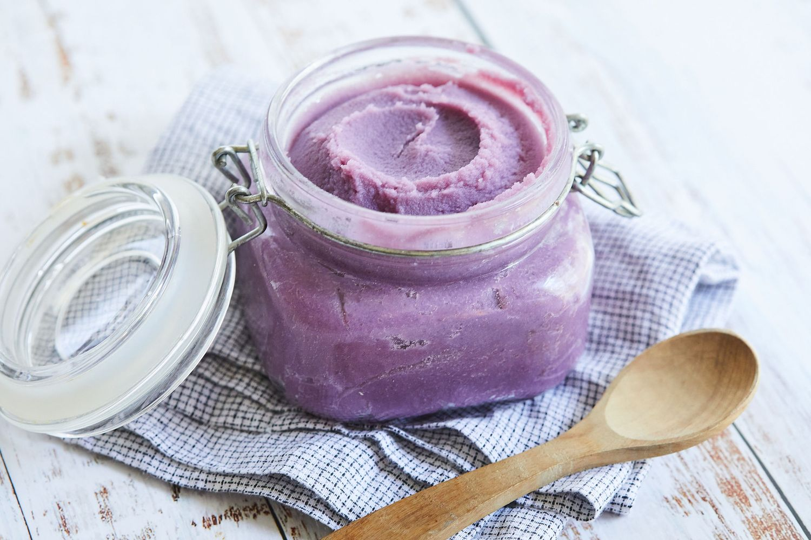

Ube Yogurt

Behind The Ube
A fairly simple, high protein recipe that's bound to get you craving for more.
Ingredients
- Fage Yogurt / GAssorted reek Yogurt
- Butterfly Ube Extract
- Sweetener / add to taste
- fruits if desired
- coconut flakes
Cooking Instructions:
- Scoop (1/2-1 cup) of fage yogurt and serve to a mixing bowl
- Combine yogurt with (1/4-1/2 tsp) of butterfly ube extract
- Mix thoroughly until ube extract concentrate has disappeared - you'll know this happens when there are no more streaks of purple bowl and
yogurt is of a completely purple hue.
- Add in sweetener of choice, mix until completely gone, add to taste if more is desired
- Stir in fruits if desired, coconut flakes also to enhance flavor, and enjoy!